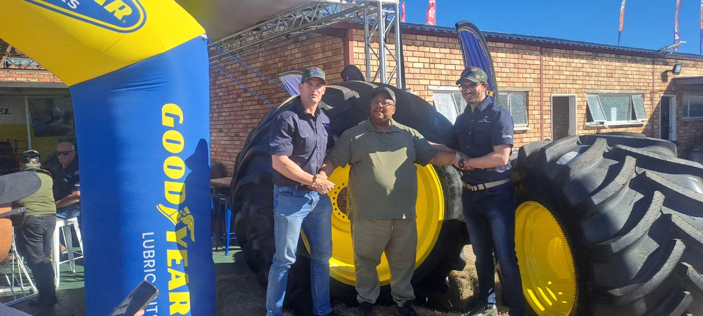

A big thank you to everyone who stopped by the Titan Global Wheel stand at NAMPO 2026.
We appreciate the support, the conversations, and the opportunity to showcase our products to the agricultural community. NAMPO is always a special opportunity for our team to meet customers, share ideas and talk about the equipment and wheel solutions that keep farms moving.
Thank you for making the event such a memorable one. We look forward to seeing you again in 2027!
